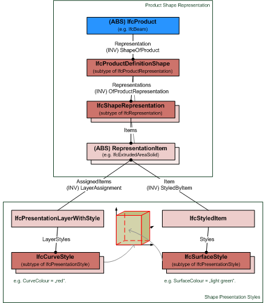
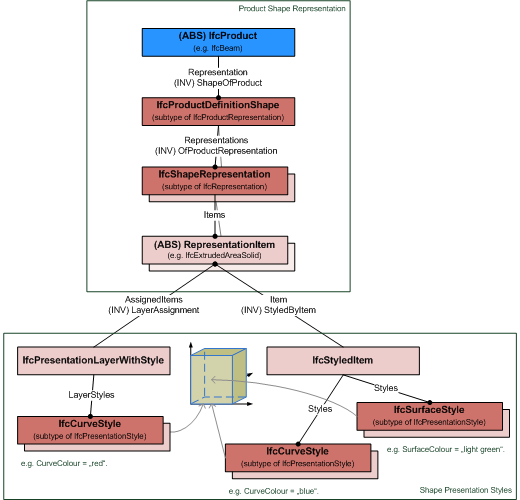

8.9.3.46 IfcRepresentationItem
| Item de représentation |
| Repräsentationselement |
The IfcRepresentationItem is used within an IfcRepresentation (directly or indirectly through other IfcRepresentationItem's) to represent an IfcProductRepresentation. Most commonly these IfcRepresentationItem's are geometric or topological representation items, that can (but not need to) have presentation style infomation assigned.
NOTE Definition according to ISO/CD 10303-43:1992
A representation item is an element of product data that participates in one or more representations or
contributes to the definition of another representation item. A representation item contributes to the definition of another
representation item when it is referenced by that representation item.
NOTE The assignment of a style is only applicable
to the subtypes IfcGeometricRepresentationItem, IfcMappedItem and some selected subtypes of IfcTopologicalRepresentationItem (IfcVertexPoint, IfcEdgeCurve, IfcFaceSurface).
In case that presentation style information is applied, it can be either applied by an IfcStyledItem, or by an assignment to an IfcPresentationLayerWithStyle. If both are present, and both style assignments include the same subtype of IfcPresentationStyle, then the style assigned by IfcStyledItem takes priority.
Figure 322 shows an instance diagram explaining the use of IfcStyledItem and IfcPresentationLayerWithStyle to apply presentation styles.
EXAMPLE The assignment of style information by a styled item and a presentation layer with style. Since the presentation styles are different, IfcCurveStyle and IfcSurfaceStyle, both are applied to the geometric representation item.
 |
Figure 322 — Representation item style |
Figure 323 shows in instance diagram explaining the override of IfcPresentationLayerWithStyle by IfcStyledItem to apply presentation styles.
EXAMPLE The assignment of style information by a styled item and a presentation layer with style. Since the presentation styles for curve style are aprovided by both, the IfcCurveStyle provided by the IfcStyledItem overrides the IfcCurveStyle provided by the IfcPresentationLayerWithStyle
 |
Figure 323 — Representation item style override |
NOTE Entity adapted from representation_map defined in ISO
10303-43.
HISTORY New entity in IFC2x.
IFC2x3 CHANGE The inverse attributes StyledByItem and LayerAssignments have been added. Upward compatibility for file based exchange is guaranteed.
XSD Specification:
<xs:element name="IfcRepresentationItem" type="ifc:IfcRepresentationItem" abstract="true" substitutionGroup="ifc:Entity" nillable="true"/>
<xs:complexType name="IfcRepresentationItem" abstract="true">
<xs:complexContent>
<xs:extension base="ifc:Entity">
<xs:sequence>
<xs:element name="StyledByItem" type="ifc:IfcStyledItem" nillable="true" minOccurs="0" maxOccurs="1"/>
</xs:sequence>
</xs:extension>
</xs:complexContent>
</xs:complexType>
EXPRESS Specification:
|
ENTITY IfcRepresentationItem
|
 EXPRESS-G diagram
EXPRESS-G diagram
Attribute Definitions:
| LayerAssignment | : | Assignment of the representation item to a single or multiple layer(s). The LayerAssignments can override a LayerAssignments of the IfcRepresentation it is used within the list of Items.
IFC2x3 CHANGE The inverse attribute LayerAssignments has been added.
IFC4 CHANGE The inverse attribute LayerAssignment has
been restricted to max 1. Upward compatibility for file based exchange is guaranteed.
|
| StyledByItem | : |
Reference to the IfcStyledItem that provides presentation information to the representation, e.g. a curve style, including colour and thickness to a geometric curve.
IFC2x3 CHANGE The inverse attribute StyledByItem has been added.
|
Inheritance Graph:
|
ENTITY IfcRepresentationItem
|
 Link to this page
Link to this page